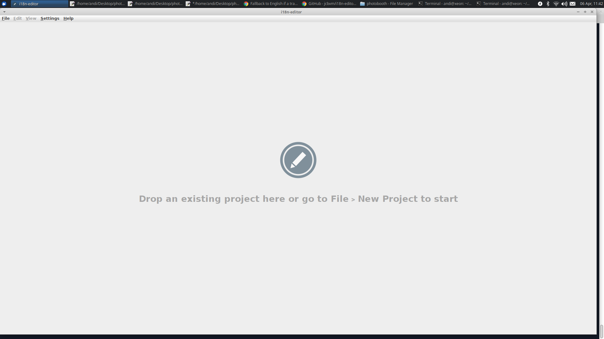
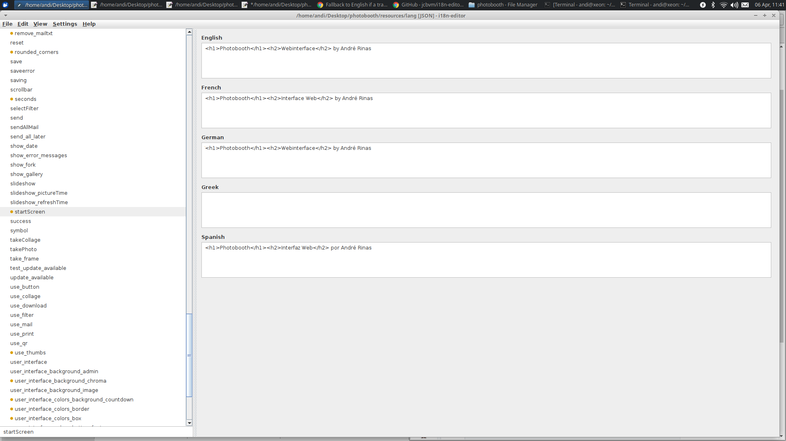

CLICK ME

Some DSLR and Compact Cameras are not supported by this project. Please check for your specific model here.
Yes it is.
Enable camera support using the raspi-config program you will have used when you first set up your Raspberry Pi.
sudo raspi-config
Use the cursor keys to select and open Interfacing Options, and then select Camera and follow the prompt to enable the camera.
Now you need to allow the webserver to use raspistill. You need add the webserver user to video group and reboot once:
sudo gpasswd -a www-data video
reboot
Once done you need to adjust the configuration. Open the admin panel in your browser localhost/admin and make the following changes:
"Take picture command": raspistill -n -o %s -q 100 -t 1 | echo Done
"Success message for take picture": Done
Pi Camera works with these config changes (also works together with preview at countdown if enabled).
Raspistill does not give any feedback after the picture was taken, workaround for that with "echo".
(Thanks to Andreas Maier for that information)
You've the possibility to add more parameters if needed (define ISO, exposure, white balance etc.). Type raspistill -? in your terminal to get information about possible parameters / settings.
Please take a look at the issue page here , if your bug isn't mentioned already you can create a new issue. Please give informations detailed as possible to reproduce and analyse the problem.
On v1.9.0 and older:
It could be your local config.json file doesn't match latest source. This file is generated if you've used the admin panel to change your config.
Remove the file and try again!sudo rm /var/www/html/admin/config.json
Open http://localhost/admin in your Webbrowser and change the configuration for your personal needs.
Changed options are stored inside config/my.config.inc.php to prevent sharing personal data on Github by accident and to make an update of Photobooth easier.
Open http://localhost/admin in your Webbrowser and change the configuration for your personal needs.
Add --keep (or --keep-raw to keep only the raw version on camera) option for gphoto2 via admin panel:
gphoto2 --capture-image-and-download --keep --filename=%s
On some cameras you also need to define the capturetarget because Internal RAM is used to store captured picture. To do this use --set-config capturetarget=X option for gphoto2 (replace "X" with the target of your choice):
gphoto2 --set-config capturetarget=1 --capture-image-and-download --keep --filename=%s
To know which capturetarget needs to be defined you need to run:
gphoto2 --get-config capturetarget
Example:
pi@raspberrypi:~ $ gphoto2 --get-config capturetarget
Label: Capture Target
Readonly: 0
Type: RADIO
Current: Internal RAM
Choice: 0 Internal RAM
Choice: 1 Memory card
Checking the browser console you'll see a 413 Request Entity Too Large error. To fix that you'll have to update your nginx.conf
Follow the steps mentioned here: How to Fix NGINX 413 Request Entity Too Large Error
You can use a hardware button connected on GPIO24 to trigger a photo. Set the Take Pictures key to e.g. 13 (enter key) via Admin panel to specify the key. Next you have to install some dependencies:
sudo apt install libudev-dev
sudo pip install python-uinput
echo "uinput" | sudo tee -a /etc/modules
After a reboot (sudo shutdown -r now), you should check if the uinput kernel module is loaded by executing lsmod | grep uinput. If you get some output, everything is fine.
You also need to run a python script in background to read the state of GPIO24 and send the key if hardware button is pressed to trigger the website to take a photo.
sudo crontab -e
@reboot python /var/www/html/button.py &
Edit the LXDE Autostart Script:
sudo nano /etc/xdg/lxsession/LXDE-pi/autostart
and add the following lines:
@xset s off
@xset -dpms
@xset s noblank
@chromium-browser --incognito --kiosk http://localhost/
NOTE: If you're using QR-Code replace http://localhost/ with your local IP-Adress (e.g. http://192.168.4.1), else QR-Code does not work.
If touch is not working on your Raspberry Pi edit the LXDE Autostart Script again
sudo nano /etc/xdg/lxsession/LXDE-pi/autostart
and add --touch-events=enabled for Chromium:
@chromium-browser --incognito --kiosk http://localhost/ --touch-events=enabled
There are two options to hide the cursor. The first approach allows you to show the cursor for a short period of time (helpful if you use a mouse and just want to hide the cursor of some time of inactivity), or to hide it permanently.
Solution A
To hide the Mouse Cursor we'll use "unclutter":
sudo apt-get install unclutter
Edit the LXDE Autostart Script again:
sudo nano /etc/xdg/lxsession/LXDE-pi/autostart
and add the following line (0 describes the time after which the cursor should be hidden):
@unclutter -idle 0
Solution B
If you are using LightDM as display manager, you can edit /etc/lightdm/lightdm.conf to hide the cursor permanently. Just add xserver-command=X -nocursor to the end of the file.
You can follow the instructions here to disable the blank screen.
There's different ways depending on your needs and personal setup:
If you access Photobooth on your Raspberry Pi you could use a Raspberry Pi Camera. Raspberry Pi Camera will be detected as "device cam".
trueNote:
If you like to have the same preview independent of the device you access Photobooth from:
trueurl(http://127.0.0.1:8081)Note
raspistill won't work if motion is installed!Yes you can. There's different ways depending on your needs and personal setup:
On Photobooth v2.4.0 and newer you can use the option "Use stream from device cam as background" inside admin panel.
raspistill for Pi Camera.You need to change the background URL path via config or admin panel. Replace url(../img/bg.jpg) with your IP-Adress and port (if needed) as URL.
Example:
sudo apt-get install -y motion
/etc/motion/motion.conf needs to be changed to your needs (e.g. starting on boot, using videoX, resolution
etc.).
If you're accessing Photobooth from an external device (e.g. Tablet or Mobile Phone) replace 127.0.0.1
with your IP-Adress.
For reference:
https://github.com/andreknieriem/photobooth/pull/20
If connection fails some help can be found here, especially gmail needs some special config.
Should be obvious but the photobooth must be connected to WIFI/internet to send photos live.
Otherwise, tell them to check the box to send them the photo later and it will add everyone's email to a list for you.
For gmail you need to generate an app password if you have 2-factor authentication on.
Tested working setup:
gmail.com
smtp.gmail.com*****@gmail.com587TLSgmx.de
mail.gmx.net*****@gmx.de587TLSweb.de
smtp.web.de***** (@web.de is not needed in your username)587TLSOpen http://localhost/gallery.php in your browser (you can replace localhost with your IP adress).
Open chrome://flags in your browser.
Look for "Accelerated 2D canvas" and change it to "disabled".
Now restart your Chromium browser.
On v2.2.0 and older:
Edit the language file inside resources/lang/ with your favorite text editor.
Once you're done upload your changes and create a pull request.
On v2.3.0 and newer:
Get i18n-editor v2.0.0-beta.1 from here. The application requires java 8 to be installed on your system. You can get java 8 from https://www.oracle.com.
.exe file. If you're on Mac you can use the application by running the .app file. If you're on Linux you can use the application by running the .jar file (java -jar i18n-editor.jar).If you are running i18n-editor the first time, you simply need to drag-and-drop the lang folder (inside your photobooth source inside the resources folder) into i18n-editor:
CLICK ME

You could also click on File -> New Project -> JSON Format ... -> navigate into the lang folder -> click on open
Now you get asked if you like to import found existing translations -> confirm clicking on yes:
CLICK ME
Make your translations:
CLICK ME

Press CTRL + S to save your changes (or click on File -> Save).
Now upload your changes and create a pull request.
php.ini file?Open http://localhost/phpinfo.php in your browser.
Take a look for "Loaded Configuration File", you need sudo rights to edit the file.
Page will look like this:CLICK ME

If you would like to allow your guests to download their images without connecting to your private WIFI or when there is no other WIFI around, you can turn your Raspberry Pi into setup an access point and WiFi client/station network on the single WiFi chip of the Raspberry Pi.
The default setting is to call your wifi hotspot Photobooth as this is built into the Photobooth prompt for guests to download images via QR code.
First head over to the hotspot directory to run the installer:
cd /var/www/html/vendor/rpihotspot
There are a couple of flags you need to change from the example command below:
- change password to your desired password, make it easy enough for guests to remember.
- change country code from CA to your own localization.
- keep or change the ip address 10.10.10.10. Remember what you change it to.
sudo ./setup-network.sh --install-upgrade --ap-ssid="Photobooth" --ap-password="password" --ap-password-encrypt
--ap-country-code="CA" --ap-ip-address="10.10.10.10" --wifi-interface="wlan0"
If you run into any errors setting up your hotspot we can remove all the settings and try it again. The first time I ran this I ran into an error, I reset it using the command below, then reinstalled it. It went smoothly the second time:
sudo ./setup-network.sh --clean